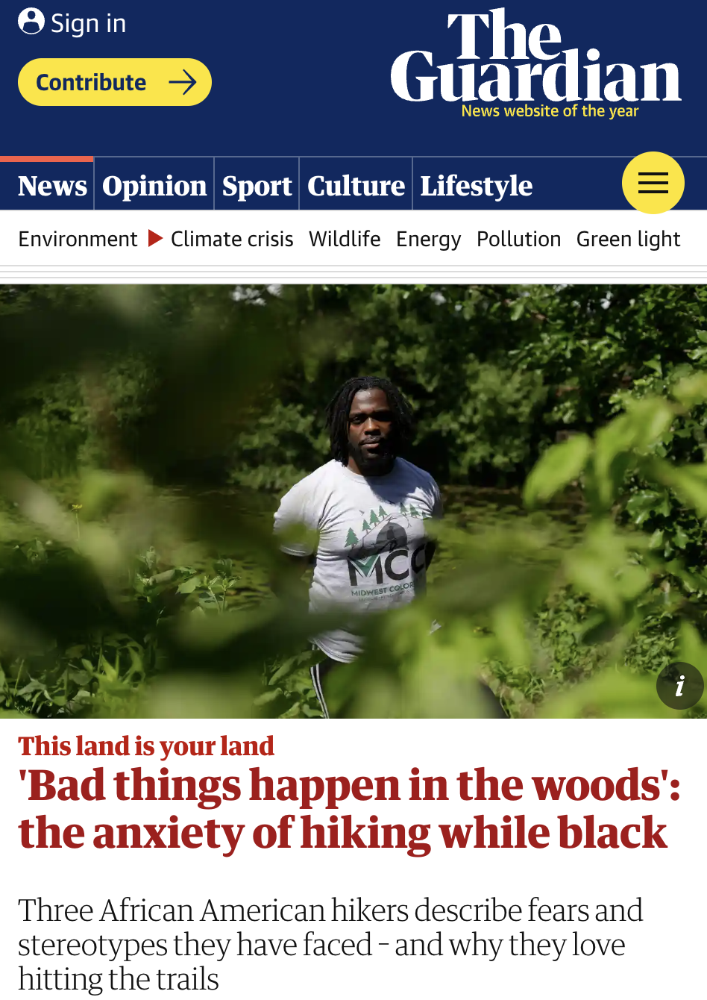
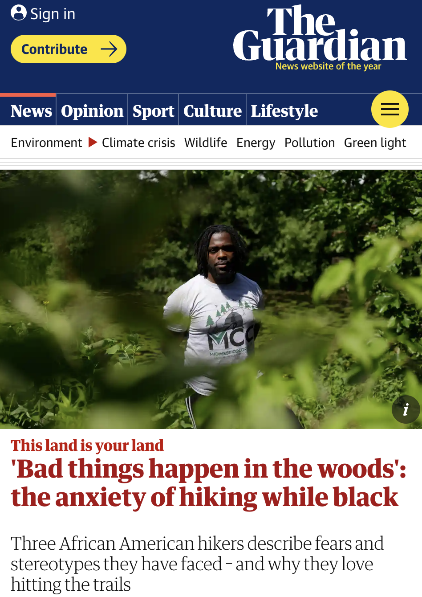

Research
I started my research with the following questions:
- What is the state of trails and hiking in the United States?
- What needs would my idea fill?
- What equivalent services and apps exist, and does my app provide a unique service that hasn't yet been created?
I then read a lot of material, ranging in subject matter from trail lingo to trail usage to recent trends to equity and diversity on the trail to trail history to quite a lot else. You can see a full list of sources that informed this project in my bibliography.

 


Planning/Brainstorming
I wanted to not only work on the mechanics of this service in app form, but to create a brand presence based on my goals for Wayfind. I decided to create a printed brand guide as the primary deliverable, and an app prototype that would operationalize the brand.
Questions
- What features and services in an app could help alleviate concerns around trail safety and comfort
- How can I create an app that doesn't center technology, but instead allows for greater immersion?
- What is the scope and personality of Wayfind as a whole, and how might its brand reflect this?
While working through various possibilities for the app, I spent time putting together a Wayfind site map and primary task flows, thinking through all the potential pages and uses for the app that I wanted to include. This helped me make previously vague ideas more concrete, and I was able to start thinking more seriously about the app interface and layout. I simultaneously began brainstorming branding principles and possibilites, including what I envisioned for Wayfind's tone and voice.


Hiking
From the conception of this project, I wanted my own hiking and trail experiences to help inform how I thought about and eventually prototyped this project. More than anything, I wanted to be able to tell a story about why Wayfind mattered, starting from from a personal perspective. This meant reflecting on previous trail experiences, but I also wanted to get on the trail a few times along the development of my project, knowing that certain encounters and experiences that I could only get on the trail would help bring up different app needs and eventualities that I might not think of otherwise.
I decided to use the Chippewa Moraine State Recreation Area as my 'test subject' for Wayfind. This is an area I've been to many times before, along the Ice Age Trail of Wisconsin. As you'll see in my prototypes, this is the area I chose as my setting to demonstrate different app features. My dad accompanied me there, and we took photos and video footage. We also talked to Rod (pictured below), who shared a variety of fascinating and valuable information. Rod has worked at the David R. Obey Ice Age Interpretive Center for 30 years, and was an incredible wealth of knowledge, both cultural and natural.
When I shared my project idea with Rod, he immediately shared that hikers will often take the wrong turn at a certain intersection in the area – the Ice Age Trail (1,200mi in total) and the Circle Loop Trail (4.9 miles total), share a trail for a short while. Although clearly marked, hikers will often continue down the Ice Age trail instead of taking the turn for the Circle Loop Trail, and then hike several miles off course before realizing that theyve been hiking longer than they should have to complete the Circle Loop. Rod thought that an app like Wayfind would be hepful in a scenario like this; alerting the hiker when they turned off their desired path. As he said, "If hikers aren't paying attention, it doesn't matter how well marked things are."
Questions
- What can I learn from intentionally hiking with this project in mind?
- What material can I collect on the trail that will help inform this project and its content?
- What questions have I not considered yet that hiking on a trail will raise?


Branding
Branding was something I considered from the very beginning, always in the back of my mind even when I wasn't overtly working on it. It felt separate from the actual app capabilities, but simultaneously integral to helping me discern the scope and meaning of Wayfind. I had put together a draft brand guide the previous semester in Experimental Interaction, but a lot had changed since then. The app felt and worked differently, with developed ideas and new capabilities. Primarily, the previous Wayfind felt too informal, and too simple, and needed to find a better balance that focused not just on the joy and experience of the trail, but equally on the technological expertise and safety that Wayfind would bring to the hiker. The original branding and style needed to do some catching up.
I wanted the user to trust the expertise and know that they could depend on the app to have a safe experience, while simultaneously getting a sense of familiarity, calm, joy, and accessibility from the design. On one hand, the brand shouldn’t feel too cold or technical, and on the other, it shouldn’t be cute or woodsy to the point where the brand would lose credibility. It needed to fall somewhere in the middle, with clear substance behind the design.
Namely, I was asking myself:
Questions
- How could I design the brand to reflect a priority of readabilty and accessibility?
- How might the design reflect the joy, familiarity and personality of Wayfind as a brand, while equally communicating the credibility and expertise of Wayfind as a service?
- What visual elements could I develop that would support the brand and serve as useful components in the app prototype?
Using a combination of software – Adobe Illustrator, Adobe Photoshop, and Procreate, I went through many iterations and styles, landing upon a style that incorporated some organic features like use of arrows as a motif, texture to emphasize certain parts of the app, and an icon set that felt fun and warm, while simultaneously incorporating professional and clear elements as well, such as card components, buttons, crisp and readable typography, and consistent color choices.
Thanks to feedback from designers along the way, through many iterations I was able to fine-tune and develop the Wayfind brand into something that better matched its purpose, mission, and vision.
Before:
After:
Wireframing & Prototyping
Using Figma, based upon the research I had done, I went through many iterations of wireframes, moving from medium to high fidelity, clickable prototypes. I wanted to make sure that my concept wasn't just a concept, but was something that felt real and workable. I wanted it to feel like something I truly would enjoy using, not just look that way. Eventually, I created presentation ready, animated gifs of individual prototype workflows using Photoshop and After Effects.
Questions
- What task flows are the most important for me to demonstrate with this prototype?
- Setting aside the brand momentarily, what capabilities and features can I include that ensure that Wayfind's UI works to solve the issues I've laid out? In other words, how can I give this project substance via the prototype?
- What components can I create and repeat, to simultaneously give the app its own tone, and simplify and make it accessible as a whole?
Testing
Although I have not yet put my prototype through formal, rigorous user testing, I did reach out to some of my hiking friends to share parts of the prototype, and get their feedback. Namely, around what types of things they'd be looking for when deciding on trails, and what types of activities they like to do on trails. Some examples of questions I asked them were:
Questions
- Thinking about your outdoor experiences, look through the three main ‘about you’ questions. What activities, reasons for hiking, and priorities when hiking are most relevant to an enjoyable hike for you, and what might be missing from the options given? Is there something in the options that you would don't care about?
- What are your thoughts on the search filter options? Are there other criteria by which you would want to have the option to filter your search for trails by? What criteria and why?
- What information do you like to have when deciding on a trail to hike, and why?
Some examples of the valuable feedback I received were:
The screen that says "Tell us about yourself and we'll show you what you like" is a bit confusing to me. Will it show me trails I might want to hike in the future?"
Detailed parking info would be a nice thing to filter by. It’s nice to know if you need to pay, find street parking, park in a lot, park in a random place you wouldn’t expect, etc."
I really like the "what do you want to prioritize on your hikes" page! I'm not sure I've ever seen that on other hiking apps. I feel like it gives people permission to not take their hiking so seriously. Physical challenge and kid-friendly trails are both equally valid priorities."
Sometimes, if I see anything about "weightloss/management" I feel as though the space or activity isn't something I'll enjoy because of a past with disordered eating and exercise habits and also a new understanding of fatphobia, so I was glad that wasn't an option."
I think it would help to know what difficulty means. Is it length, altitude gain, trails with obstacles like rocks and roots, or other users ratings?"
Expert Feedback
Along the way, I was privileged to have my project reviewed by several designers and artists, each providing critical feedback that helped challenge my work for the better. Each time I shared about the project, it helped me to see new areas for improvement. I also received more invaluable feedback around best graphic design and ux practices. The project would look very different if it were not for them.
I'd like to thank the following people for the support and care they showed through their diligent and thoughtful feedback:
Kristy Caldwell

Illustrator, New York City
“I think this would be amazing, I think everybody would want it.”

Heidi Miller
Senior Graphic Designer/Creative Lead, Magnet360, Minneapolis
"Normally in a logo I would say..ehh Helvetica Bold in a logo..but I immediately got that it's a wayfinding font. It's a nice tie in. I would add a secondary font with just a little bit of character, though. To keep it feeling unique."
Jacqueline Nuzzo
Lead Digital Artist and Content Manager, Grand Image, Seattle
Since there's no physical product to look at, just seeing what the app looks like when you first open it could be a nice touch."
Aaron Salmon
Product & Design Lead, Chief Digital and Artificial Intelligence Office, Office of the Secretary of Defense, The Pentagon
"How will the user get back to the previous page?"
Dave Terry
Creative Director, May Advertising and Design, St. Paul
"As an All Trails user, I appreciate the unique benefits of this as a tool. I can also contrast your UI with "the competition" and see how you've created new benefits with simpler goals."
Brian Thoes
MAGWD student, Minneapolis
"I was at Joshua Tree, and there were some trails where if I hadn’t talked to the park ranger and known to bring water, or the difficulty level, it would've been difficult. I think this has a lot of social good involved."